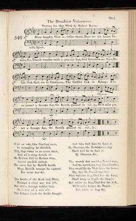

The Dumfries Volunteers
Published in Scots Musical Museum Volume VI N°346 page 363
"Written for this Work by Robert Burns"
TuneSequenced by Ch Souchon


|
1. 'Does haughty Gaul invasion threat,
Then let the louns beware, Sir, There's wooden walls (*) upon our seas, And Volunteers on shore, Sir. The Nith shal rin to Corsincon, The Criffel sink in Solway, E're we permit a foreign foe, On British ground to rally, We'll ne'er permit a foreign foe, On British ground to rally.' 2. O let us not, like snarling curs, In wrangling be divided, Till, slap! come in an unco loun, And wi’ a rung decide it! Be Britain still to Britain true, Amang ourselves united; For never but by British hands Maun British wrangs be righted! No! never but by British hands Shall British wrangs be righted! 3. The Kettle o’ the Kirk and State, Perhaps a clout may fail in’t; But deil a foreign tinkler loun Shall ever ca’a nail in’t. Our father’s blude the Kettle bought, And wha wad dare to spoil it; By Heav’ns! the sacrilegious dog Shall fuel be to boil it! By Heav’ns! the sacrilegious dog Shall fuel be to boil it! 4. The wretch that would a tyrant own, And the wretch, his true-born brother, Who would set the Mob aboon the Throne, May they be damn’d together! Who will not sing “God save the King,” Shall hang as high’s the steeple; But while we sing “God save the King,” We’ll ne’er forget the People! But while we sing “God save the King,” We’ll ne’er forget the People! (*) British battleships |
1. Si le Franc se fait menaçant,
Mieux vaut qu'il considère Ces murs de bois (*) sur l'océan, Au sol, ces Volontaires. Que confluent Nith et Corsicon Que le Solway s'enlise, Si jamais nous lui permettions De prophaner nos rives. Jamais nous ne lui permettrons De prophaner nos rives! 2. Cessons donc de nous déchirer Comme des chiens qui grondent, Sinon un gredin d'étranger Met d'accord tout le monde! Sois sans crainte, Britannia, Plus rien ne nous divise; Hors toi, nul ne réparera Les exactions commises! Non, toi seule répareras Les exactions commises! 3. Notre Eglise et notre Etat sont Un chaudron plein d'escarres Mais jamais nous ne souffrirons Qu'un autre le répare. Nos pères pour nous l'ont acquis Au prix du sang. Personne N'y touche, ou bien se sera lui Qu'on brûle et qu'on tisonne. Par Dieu, certes, ce sera lui Qu'on brûle et qu'on tisonne. 4. Le lâche qui sert un tyran, Ou son frère qui dresse Contre leur Prince les manants Tous deux, je les exècre. Qui ne dit "Dieu sauve le Roi!" Qu'il pende à la potence, Car c'est aussi, tout à la fois, Au peuple que l'on pense! Oui c'est aussi, tout à la fois, Au peuple que l'on pense! (*) les vaisseaux de guerre britanniques (Trad. Ch.Souchon (c) 2005) |
|
"This stirring song of British patriotism was written by Burns for the 'Museum'. According to William Stenhouse (1853), the tune to which Burns adapted his words was composed by Stephen Clarke (1735-97), an Edinburgh musician and music teacher. John Glen (1900) writes that the song 'is a good martial air, somewhat in the style of "Hearts of Oak"'. Given Burns's sympathies for the deposed Stewarts and an independent Scotland, it is interesting to consider why Burns wrote such a strong piece of British propaganda? It could be that he was thinking about his application to join the Customs as an exciseman when he wrote this song. The song lyrics are very similar to 'Rule Britannia'."
Source: The National Burns Collection - Scanned edition of the SMM |
"Ce chant vibrant de patriotisme britannique a été écrit par Burns pour le "Musée". Selon William Stenhouse (1853), la mélodie sur laquelle Burns composa ces paroles est due à Stephen Clarke (1735-97), un musicien et maître de musique. John Glen (1900) écrit, quant à lui, que ce chant est un 'bon air martial, un peu dans le style des
"Coeurs de chêne"
. Etant donné les sympathies de Burns pour les Stewarts évincés et pour l'indépendance de l'Ecosse, on peut se demander ce qui le poussa à produire ce condensé de propagande britannique? Il est possible qu'il ait eu en tête sa demande d'intégration dans le service des Contributions indirectes lorsqu'il composa ce chant. Ces vers font fortement penser au fameux "Rule Britannia!'
Source: The National Burns Collection - Edition scannée du "Musée Musical Ecossais" |